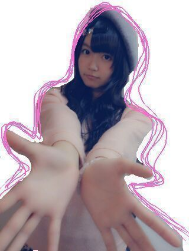
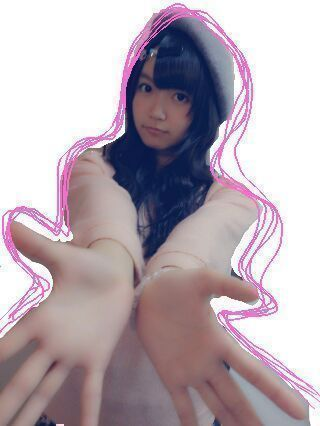
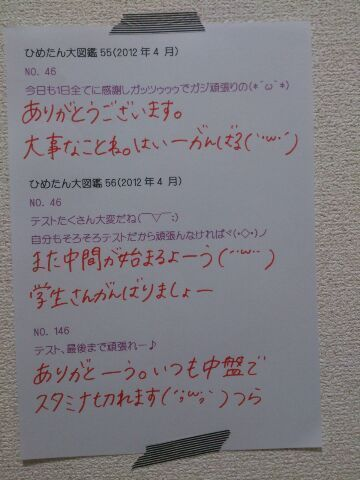

| 2013/10 03 Thu | ひめたん(*>ω<*)そ の350 |
最近の出来事
携帯の充電器が焦げました。
本体もちょっと焦げちゃったけど
本体の方は無事稼働してます
(｀・ω・´)/
いやー参ったよねー
お醤油ひっくりかえったとこ
ちょうどひめたん携帯充電しててさー
もうめーちゃーめーちゃ焦ったよね
修理出したら帰ってくるの時間かかるだろうし
そうなったらしばらくブログは書けんなーとか。
んだけどね
なんとか大丈夫だったみたい！
充電器は焦げちゃったので
ままのを借りてます
金属のとこからほのかにお醤油のかおりがします
そう、
ちま (樋口日奈ちゃん)の話には
続きがあったんです
あのあとねひめたん起きたの。
写め撮られてる気配を感じてね←
ほら、ひめたんって寝てるようで
寝てないようなもんだからさっ
そいで起きて、ちまが
「あはーごめんねー」ってなって
ひめたんはヘッドホンを装着し
ブログ開いてコメント読んでましたすると！
今度はちまが
眠りについたのよ。
彼女もテスト前でお疲れだったのねー
そいでしばらくしたら
ひめたんの肩にもたれかかる姿勢になったので
今だ！と思い
写め撮った(・∀・)にや

もーちょっと攻めこんで
写め撮ろうとしたら起きちゃったー
ちまお疲れさま( ^ω^ )
エア握手会場はこちらでーすよー

......あの、ねみなさん
いろいろ言いたいのはわかるんです
遠くね？とか なんて顔してんのよ？とか
いろいろ言いたいのはわかるんですが
違うんです違うんです諸事情があるんですっ
まず、顔が異常に遠いのは
こんな写めはじめて撮ったから
距離感がわからんのよ(´・ω・｀)う
そしてすーぱーおすまし顔なのは
撮影者 るんるん (斎藤ちはるちゃん)に
アゴ引くな！アゴ引くな！めーちゃんアゴ！
と言われてしまったために
アゴばっか意識してたら表情が......
はうう......
もちょい練習しますエア握手。
普段はもーちょいにこにこしてるんだよお ！
！
そして手はちっちゃいねって
よく言われます
とゆーか指が短いんかな。( ^ω^ )ははは←
エア握手 リクエストしてくれたみなさん
ありがとうございましたー♪
また今度やるときがあるなら
もちょーい上手に撮りまーすーがんばります
携帯の充電器が焦げました。
本体もちょっと焦げちゃったけど
本体の方は無事稼働してます
(｀・ω・´)/
いやー参ったよねー
お醤油ひっくりかえったとこ
ちょうどひめたん携帯充電しててさー
もうめーちゃーめーちゃ焦ったよね
修理出したら帰ってくるの時間かかるだろうし
そうなったらしばらくブログは書けんなーとか。
んだけどね
なんとか大丈夫だったみたい！
充電器は焦げちゃったので
ままのを借りてます
金属のとこからほのかにお醤油のかおりがします
そう、
ちま (樋口日奈ちゃん)の話には
続きがあったんです
あのあとねひめたん起きたの。
写め撮られてる気配を感じてね←
ほら、ひめたんって寝てるようで
寝てないようなもんだからさっ
そいで起きて、ちまが
「あはーごめんねー」ってなって
ひめたんはヘッドホンを装着し
ブログ開いてコメント読んでましたすると！
今度はちまが
眠りについたのよ。
彼女もテスト前でお疲れだったのねー
そいでしばらくしたら
ひめたんの肩にもたれかかる姿勢になったので
今だ！と思い
写め撮った(・∀・)にや
もーちょっと攻めこんで
写め撮ろうとしたら起きちゃったー
ちまお疲れさま( ^ω^ )
エア握手会場はこちらでーすよー

......あの、ねみなさん
いろいろ言いたいのはわかるんです
遠くね？とか なんて顔してんのよ？とか
いろいろ言いたいのはわかるんですが
違うんです違うんです諸事情があるんですっ
まず、顔が異常に遠いのは
こんな写めはじめて撮ったから
距離感がわからんのよ(´・ω・｀)う
そしてすーぱーおすまし顔なのは
撮影者 るんるん (斎藤ちはるちゃん)に
アゴ引くな！アゴ引くな！めーちゃんアゴ！
と言われてしまったために
アゴばっか意識してたら表情が......
はうう......
もちょい練習しますエア握手。
普段はもーちょいにこにこしてるんだよお
！
そして手はちっちゃいねって
よく言われます
とゆーか指が短いんかな。( ^ω^ )ははは←
エア握手 リクエストしてくれたみなさん
ありがとうございましたー♪
また今度やるときがあるなら
もちょーい上手に撮りまーすーがんばります

 初めてコメ二回しちゃったいいのかなぁ？？
初めてコメ二回しちゃったいいのかなぁ？？
全然だーよーありがとー！
思い立ったらなんか呟いてってちょーだいっ
 アクションビームの顔文字って
アクションビームの顔文字って
どんなんですかね？
(Г・ω・)Г あくしょん
カラオケ行くと
やっぱり乃木坂の歌を歌ったりする？
ひとりのアーティストさんとして
乃木坂ちゃん好きだからねー
ぐるぐるカーテンとか歌いやすいよ♪
日芽香は
握手会ではどんな内容が楽しいかな？？
参考程度に教えてー（笑）
ほんとに、おまかせよほんとに。
なんか聞きたいことがある方は
ちょっとおうちで考えていただけると
嬉しいでーす∩^ω^∩
ひめたんの眉毛が好きなんやけど、変かな？
照れるなー///
あ、いや変とか思わないけどさ///
 さらさらストレートのひめたんを、
さらさらストレートのひめたんを、
ラインのトップ画にしてたら
友達からめっちゃかわいいって言われた
めっちゃ嬉しい！！ひめたんはどう思うー？？♪
めっちゃ嬉しい！ありがとー(*^ω^*)
さらさらストレート好評なのー///
こないだコメントに書いた
体育競技会なんだけど赤組勝てたよ!
よかったらおめでとうって言ってー!
報告まってたよ。赤組さんおめでとー！
体育競技会って響きかっこいーなー
ゆっくりやすんでね。お疲れさまっ＊
 トイプードル飼ってて、散髪行くんだけど、
トイプードル飼ってて、散髪行くんだけど、
どんなにしたらいいと思う？
わんちゃんの髪はあんま詳しくないけど
たれミミわんちゃんのミミにりぼんつけて
あげたくなるっっ
私、おにゃのこひめきゅんなんだけど、
ひめたんびーむ浴びにいってもいい？
そして、私からもひめたんびーむしていい？///
おにゃのこひめきゅんちゃん(∪^ω^∪)
いーねーびーむ合戦♪
楽しみにしてるよーう///
井上真央さんに似てるって言われたことない？
はじめて言われましたー恐れ多いよおお
光栄すぎて。もう、どうしよう。
ありがとうございますっ( ω )
 ひめたんのズバリ推しメンはだれ？
ひめたんのズバリ推しメンはだれ？
みんな好きって前提で
みなみ (星野みなみちゃん)
とまと (大和里菜ちゃん)
みりりん (渡辺みり愛ちゃん)
そう私はDDです。許してー(笑)
 ちょっと今学校の事でいろいろ悩んでいて‥
ちょっと今学校の事でいろいろ悩んでいて‥
ひめたんから応援メッセージを
いただきたいのです
大丈夫かな。
困った時は誰かにお話を聞いてもらったら
スッキリするかもだよ？
ひめたんも最近 万理華 (伊藤万理華ちゃん)に
話聞いてもらってスッキリしたよ。
学校のお友だちが難しかったら
ファミリーさんとか、幼なじみさんとか。
ひめたんでよければ話聞くよー！
万理華が
似顔絵描いてくれた紙が
なくなった......
また描いてもらうね(´;ω;｀)

(＊´・ω・＊)
コメント(273)
2013/10/03 22:30